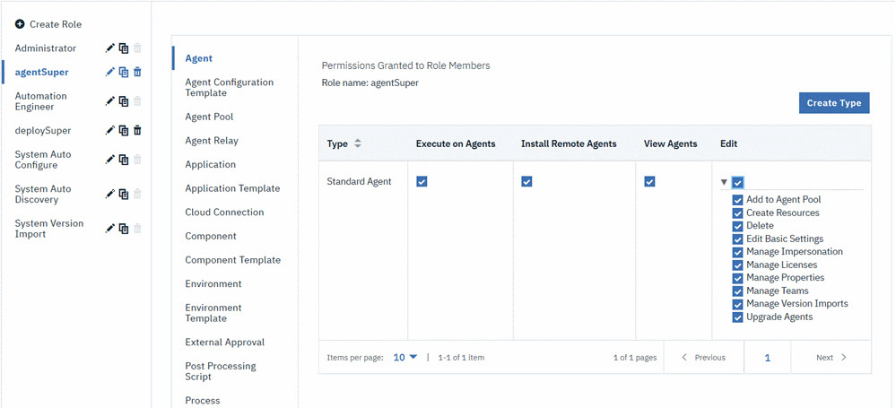

You can create roles on the server and assign permissions to them.
About this task
By default, new roles have no permissions. Therefore, when you create a role, you must
add all the permissions for that role. For example, if you do not add permission to view
the pages of the server user interface in the Web UI section,
users can log in to the server but cannot see any information.Several default roles
are available. These roles have matching default users.
- Administrator role has all permissions. It is
appropriate for administrators.
- Automation Engineer is an example of a role for a
typical non-adminstrator user. It includes permissions to create and edit
most things on the server, including applications, component, and processes,
but not the permission to delete things, change permissions, or change
system settings.
- UC Auto Configure role has the permissions to create
resources.
- UC Auto Discovery role is used by plug-ins that
discover information about systems, such as the WebSphere® Application Server
- Deploy plug-in.
- UC Version Import role has only the permission to
manage versions.
Create roles and assign them permissions as follows:
Procedure
-
On the server, click .
- In the Role Configuration pane, click Create
Role.
-
Enter a name for the role, and then click Save.
-
Click the role to select it.
-
With the role selected, select the object type to which you want to assign permissions,
such as environments, applications, or components.
All security types for the selected object type are displayed. For information about
creating security types, see
Creating security types.
In the
following figure, the security types for the Agent
product area are displayed. Because the
agentSuper role is selected, only that role
is affected by permission changes to the Standard
Agent and agentManager
security types. That is, if you select the Agent
object type for the deploySuper role, the
granted permissions reflect the settings that were defined the last time
that role was modified.
Tip: Some users might no be unable to see agent relays in the
user interface, even though they were visible before the upgrade. You
can set the permission for these users to view agent relays: Click
Agent Relay in the permissions area list, and
then select View Agent Relays.

-
In the Permissions Granted to Role Members pane of an
object type, grant permissions by selecting the associated checkbox for a
security type.
You can select all edit subpermissions by selecting the
Edit check box. To deselect all subpermissions, clear
the corresponding check boxes. Select individual subpermissions by expanding the
Edit list and clicking the corresponding check boxes.
For information about editing subpermissions, see
Security typesNote: If a role grants the Create permission for some object type, such as
components, it is important that the role also grant the Edit Basic Settings and Manage Teams
permissions for that type. Otherwise, the options for creating the object are limited.
- Required:
Click the Web UI category, and specify the pages in the server
user interface that the role can access.
Each option in this list refers to a top-level page in the user interface.
For example, if you do not select the Applications Tab
option in this list, users with this role do not see the top-level
Applications tab when they log in to the server. You can select
each tab separately.
- Optional:
If the role users need system permissions, such as the ability to change permissions,
click Server Configuration, and specify those permissions.
- Optional:
Create a role from an existing role by clicking icon next to the role you want to copy.
Copying a role helps you save time in creating a similar role. The copied role duplicates the
permission set of the existing role to allow to make minor modifications.
What to do next
Assign roles to users by adding users or groups to teams. You cannot assign a role to a
user directly; users must be assigned roles when they are added to teams. See Assigning users to teams.